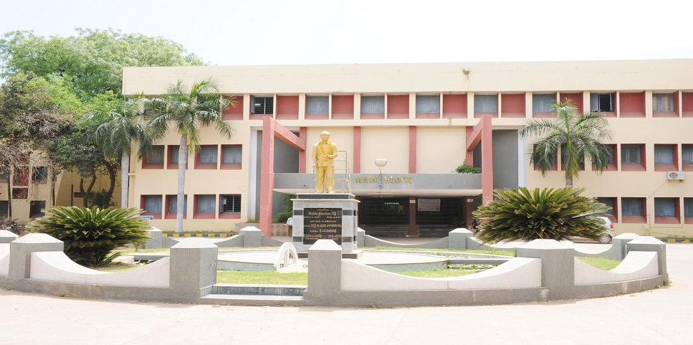

The college owes its existence to the keen interest of Late Kandula Obul Reddy to develop technical education in Rayalaseema region of Andhra Pradesh. With a view to translating his noble ideal of imparting technical education into reality, a Technical Training Institute at Vempalli, Kadapa District was started in 1979 under the aegis of Sri Kandula Obul Reddy charities. It is in the year 1980 that K.S.R.M. College of Engineering was established to perpetuate the memory of Late Sri. Kandula Srinivasa Reddy, youngest son of Late Sri Kandula Obul Reddy. Sri Kandula Srinivasa Reddy, a brilliantstudent of III year Mechanical Engineering at Delhi College of Engineering, New Delhi, met with his untimely death in a scooter accident on 18th Oct, 1979.
The college was formally inaugurated on 14 November 1980 by Sri T. Anjaiah, the Chief Minister of Andhra Pradesh and it started functioning from the academic year 1980-81.
The college had its modest beginnings in 1980 with an intake of 160 students with core branches – Civil, Electrical & Electronics, Electronics & Communications and Mechanical Engineering. Keeping in view the latest trends, priorities and relevance in Engineering and Technology, the Board of Management decided to start Computer Science and Engineering in 1990 commemorating the decennial year of the college. With the conserted efforts of the Management and the Successive Principals, the departments have been strengthened year after year and the intake has steadily been increased to 1080 by the year 2014.
The College campus is located 7 K.M. away from Kadapa town on Kadapa to Pulivendula Highway in a calm and salubrious area of 35 acres. The College is set in a serene environment with lush greenery and fresh air. Four multi-storeyed RCC structures measuring 26,700 sqm provide accommodation for the departments. The College has dedicated electric power feeder and 250 KVA substation. Other capital resources include transport vehicles and four hostels. Excellent Bus facilities exist from Kadapa to Hyderabad, Vijayawada, Nellore, Tirupati, Kurnool, Bangalore, Chittoor and Chennai.
